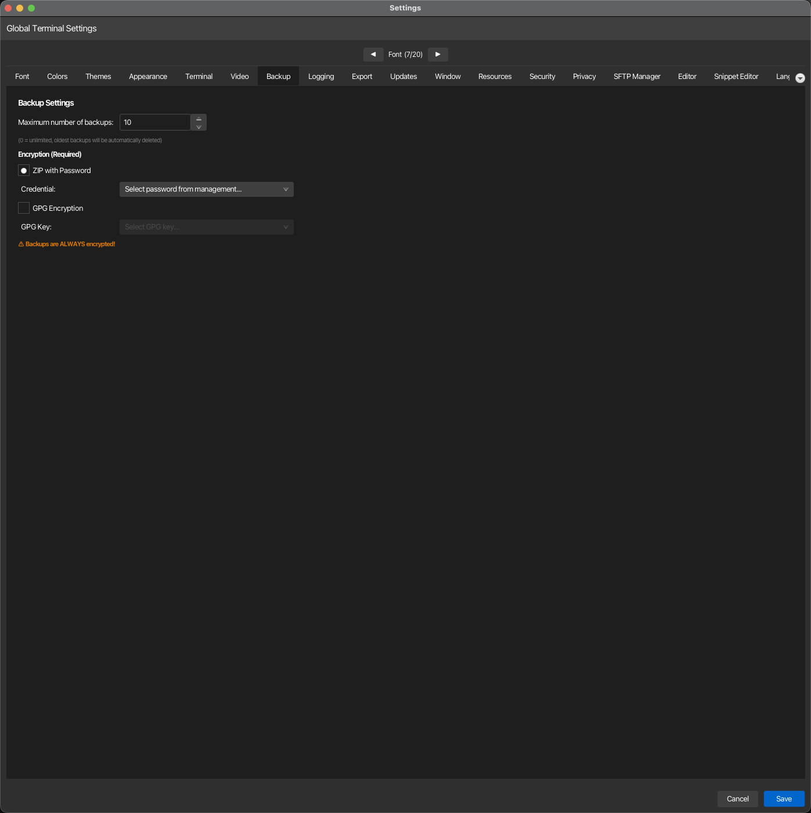

Backup¶
Configure backup retention policy and encryption method for korTTY session backups. Open via Configuration → Global Settings → Backup; stored in ~/.kortty/global-settings.xml.

| Setting | Type | Values | Default | Stored as |
|---|---|---|---|---|
| Maximum number of backups | number | 0–100 (0 = unlimited) | 10 | maxBackupCount |
| ZIP with Password | toggle | — | On | backupEncryptionType |
| Credential | dropdown | Available stored credentials | — | backupCredentialId |
| GPG Encryption | toggle | — | Off | backupEncryptionType |
| GPG Key | dropdown | Available GPG keys | — | backupGpgKeyId |
Warning
Backups are ALWAYS encrypted. Both encryption modes (ZIP with password and GPG) are mandatory — at least one must be configured before backups can be performed.
Note
Maximum Backups: Set to 0 to keep backups indefinitely; any other value (1–100) will automatically delete the oldest backups once the limit is reached. When using password-based encryption, select a credential from the management system. When using GPG encryption, select an available GPG key. The encryption type is stored in the global settings and determines which credential or key ID is used for future backups.
Backups include ssh-host-keys.properties, so normalized host:port trust decisions shared by interactive Terminal, SFTP, and Mosh bootstrap connections survive restore; the transient cross-process .lock file is not included. JobScheduler host-key pins remain separately stored in job-scheduler.xml.
Local-AI backups include llm/models.xml and rag/stores.json so model registrations, role assignments, and knowledge-source definitions can be restored. They exclude GGUF weights, llama.cpp runtime packages, temporary sidecar data, source documents, and regenerable HNSW snapshots; see Backup & restore.